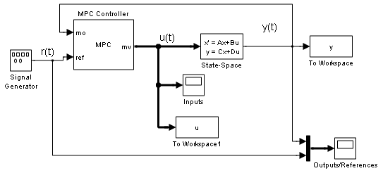
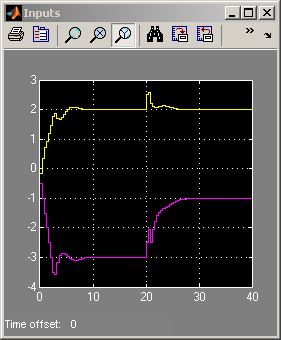
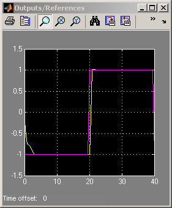

MPC Control with Input Targets
Contents
This demonstration shows how to design an MPC controller to control a system with two inputs and one output, and how to assign a target set-point for the first manipulated variable.
Define the Plant to be Controlled
if ~mpcchecktoolboxinstalled('simulink') disp('Simulink(R) is required to run this demo.') return end
N1=[3 1];
D1=[1 2*.3 1];
N2=[2 1];
D2=[1 2*.5 1];
sys=ss(tf({N1,N2},{D1,D2}),'min');
A=sys.a;B=sys.b;C=sys.c;D=sys.d;
x0=[0 0 0 0]';
MPC Controller Setup
Ts=.4; % Sampling time model=c2d(ss(A,B,C,D),Ts); % discrete-time prediction model mpcobj=mpc(model,Ts,20,5);
-->The "Weights.ManipulatedVariables" property of "mpc" object is empty. Assuming default 0.00000. -->The "Weights.ManipulatedVariablesRate" property of "mpc" object is empty. Assuming default 0.10000. -->The "Weights.OutputVariables" property of "mpc" object is empty. Assuming default 1.00000.
Change default weights.
mpcobj.weights.manipulated=[0.3 0]; % weight difference MV#1 - Target#1
mpcobj.weights.manipulatedrate=[0 0];
mpcobj.weights.output=1;
Define input specifications.
clear MV MV(1)=struct('RateMin',-.5,'RateMax',.5); MV(2)=struct('RateMin',-.5,'RateMax',.5);
The following sets up a target set-point u=2 for the first manipulated variable.
MV(1).Target=2; % Input steady-state set-point
mpcobj.MV=MV;
Simulation Using Simulink®
Tstop=40; % Simulation time open_system('mpc_utarget') % Open Simulink(R) Model sim('mpc_utarget',Tstop); % Start Simulation
-->Integrated white noise added on measured output channel #1. -->The "Model.Noise" property of the "mpc" object is empty. Assuming white noise on each measured output channel.  
bdclose('mpc_utarget')